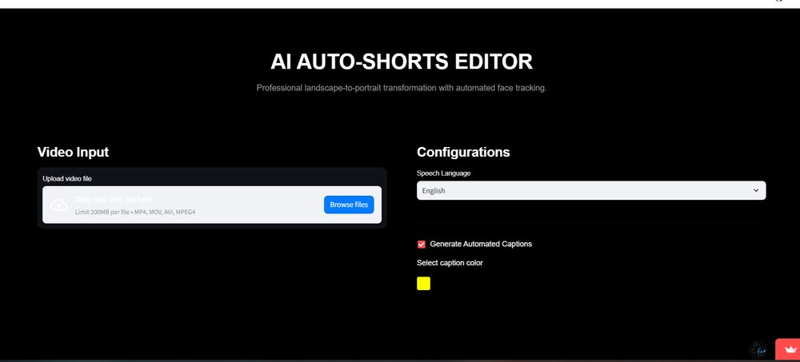
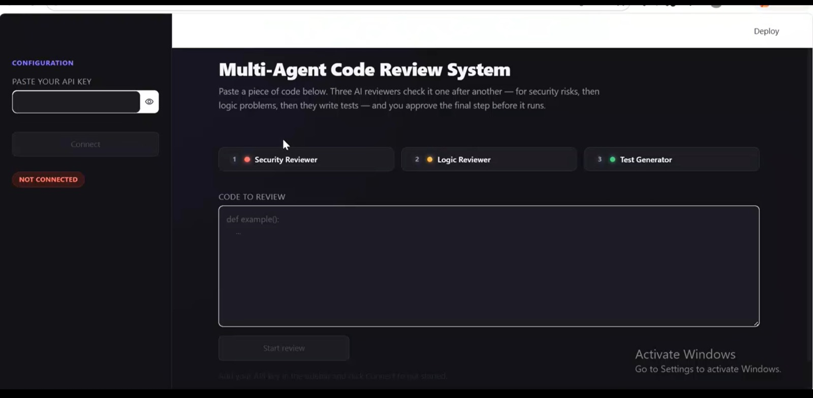
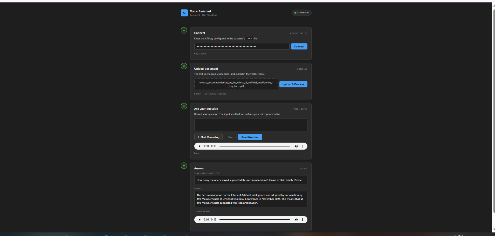
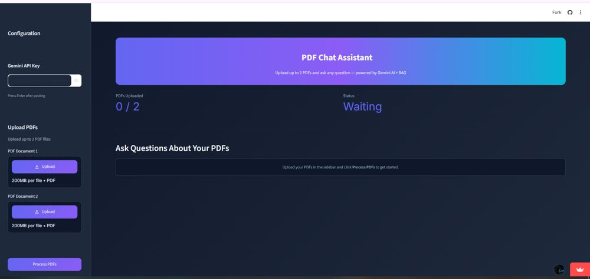

// projects
Production systems across the range.
Each project: the problem, what I built, my ownership, and the impact.

01 · SAAS · LIVE DEPLOYED
Dibnow Repair — Multi-Tenant Repair Shop SaaS
Full repair-shop operating platform — tickets, technicians, inventory, customers, and AI diagnostics in one dashboard
The Problem
Repair shops in Pakistan run on paper tickets and WhatsApp — no visibility into technician workload, inventory, or customer history, and no way to scale past one location.
What I Built & Owned
Built the production platform end to end at ClickTake Technologies — GDPR-compliant multi-tenant architecture with JWT/RBAC across 4 permission tiers, live GPS tracking for pickup/delivery drivers, digital signatures for handover, JazzCash/EasyPaisa payment integration, and an AI diagnostics assistant that suggests likely faults from the reported issue.
500+
shops trust the platform
60%
faster repairs reported
0
cross-tenant data leaks
Next.js 14
MongoDB
JWT/RBAC
AI Diagnostics
GPS Tracking
Docker

02 · LANGGRAPH · MULTI-AGENT PIPELINE
Multi-Agent Code Review System
Three sequential AI reviewers with context handoff, a real persisted human-approval interrupt, and automatic review on every GitHub Pull Request
The Problem
Manual code review is slow and inconsistent, and most "AI code review" demos either skip human oversight entirely or fake it. I wanted a pipeline where each reviewer builds on the last one's findings instead of repeating them, and where the human-approval step is a real, persisted pause — not a simulated one.
What I Built & Owned
Built a sequential three-agent pipeline with LangGraph: a Security reviewer flags injection risks, hardcoded secrets, and auth flaws; a Logic reviewer checks correctness and edge cases while explicitly avoiding anything Security already caught, since each agent's prompt includes the previous agent's findings; execution then genuinely pauses using LangGraph's
interrupt_before with a checkpointer, resuming only when explicitly approved; a Test Generator then writes pytest tests covering normal behavior, flagged edge cases, and the security issue itself. Ships three ways: a local CLI, a Streamlit web UI, and a GitHub Actions workflow that reviews every pull request automatically.Being Honest About What This Is
This is a fixed-order sequential pipeline, not an autonomous agentic system — the three agents always run Security → Logic → Test Generation in that order; none of them decides to skip a step or loop back. In CI mode there's no terminal to pause for, so the human gate becomes the pull request review itself, same as how tools like Qodo and CodeRabbit work. No accuracy or false-positive rate has been benchmarked yet — it's a first-pass signal, not a verified one.
LangGraph
Groq LLaMA 3.3 70B
langchain-groq
Streamlit
GitHub Actions
Python

03 · VOICE AI + RAG + LANGRAPH
AI Voice Assistant for Document Q&A
End-to-end voice pipeline — speak a question, get a spoken answer from your PDF
The Problem
Users needed to ask questions about PDF documents using voice — no existing tool combined speech-to-text, RAG retrieval, and text-to-speech in one seamless pipeline.
What I Built & Owned
Designed and built the complete pipeline solo using LangGraph to orchestrate 6 nodes: Whisper transcribes voice input → sentence-transformers + FAISS retrieves relevant PDF chunks → Groq/LLaMA 3.3 70B generates answer → gTTS converts answer to audio. Fully free stack — only one API key needed (Groq).
Architecture
Voice Input → Whisper STT → FAISS Vector Search → Groq LLM → gTTS Output · LangGraph state graph manages the full flow
LangGraph
Whisper
FAISS
Groq/LLaMA
gTTS
sentence-transformers
Streamlit

04 · RAG · LIVE DEPLOYED
PDF Chat Assistant
Full RAG pipeline from scratch — answers only from your uploaded PDFs, no hallucination
The Problem
Users needed accurate, trustworthy answers from their own documents — not AI guessing from general training data.
What I Built & Owned
Built complete RAG without any framework — pdfplumber extracts text, chunked into 400-word pieces with 50-word overlap, Gemini Embedding API creates vectors, cosine similarity finds top 4 relevant chunks, Gemini 2.5 Flash answers using context only. Shows which chunk and PDF each answer came from.
2 PDFs
simultaneous support
0%
hallucination from outside knowledge
Live
deployed on Streamlit Cloud

05 · COMPUTER VISION · VIDEO AI
AI Auto-Shorts Editor
Landscape-to-portrait video transformation with automated face tracking and captions
The Problem
Creators shoot landscape video but need portrait shorts for TikTok/Reels/Shorts — manual re-framing and captioning takes hours per video.
What I Built & Owned
Built an automated pipeline that tracks the speaker's face across frames and re-crops landscape footage into portrait format in real time, with auto-generated, styleable captions synced to speech and multi-language speech recognition support.
Face Tracking
Computer Vision
Speech Recognition
Auto-Captions
Python
06 · AGENTIC AI
Data Web Scraper Agent
Autonomous AI agent that navigates websites and extracts data — no human needed at each step
The Problem
Manual web scraping requires human decisions at every step and breaks when page structure changes. A truly autonomous agent needed to plan and adapt.
What I Built & Owned
Built agentic loop using Playwright and Gemini 2.5 Flash. The agent reads page HTML, Gemini decides the next action (click / type / scrape / finish), Playwright executes it, loop repeats until goal is complete. Data saved as structured JSON. True agentic loop — AI plans, executes, observes, replans.
Playwright
Gemini 2.5 Flash
Python
Streamlit
JSON
07 · GEMINI · RETAIL CHATBOT
Gadget Buddy AI Chatbot
Inventory-aware retail chatbot with a secure admin panel and WhatsApp lead handoff
The Problem
Gadget and electronics retail stores get repetitive customer questions about what's in stock, and shop owners have no easy way to update inventory or capture interested leads without manual follow-up.
What I Built & Owned
Built a Streamlit chatbot that answers customer questions using the Gemini API, grounded in the store's actual current inventory rather than generic product knowledge. Paired it with a password-protected admin panel so the shop owner can update stock levels directly with no code changes, changes reflected in chatbot responses immediately. Captures customer details as leads during the conversation, then routes qualified customers to the shop owner over WhatsApp via a click-to-chat link.
Known Limitations
No bulk-import or point-of-sale integration yet, so stock changes made outside the admin panel aren't reflected automatically. Lead capture relies on the customer voluntarily sharing details, with no verification step. WhatsApp integration opens a click-to-chat link — it doesn't send messages automatically or track delivery.
Streamlit
Gemini API
Python
WhatsApp Integration
08 · XGBOOST + LANGGRAPH + GEMINI
Harvest Signal — AI-Driven Perishable Waste Predictor
Demand forecasting for perishables, cross-referenced with live weather, turned into a plain-English restock recommendation
The Problem
Retail stores over- or under-stock perishable goods because demand forecasting rarely accounts for weather and local events in a way a store manager can actually act on in plain language.
What I Built & Owned
Trained an XGBoost model on real retail data from Kaggle's Retail Store Inventory Forecasting dataset. Built a 6-step LangGraph pipeline with one real decision point: if stock is critically low, it skips straight to an urgent restock warning instead of asking the LLM to weigh trade-offs. Live 5-day weather forecasts from OpenWeatherMap are bucketed into the four categories the model was trained on. Gemini converts the model's numbers, weather, and event data into a short, plain-English recommendation.
An Honest Finding About the Data
Before trusting the accuracy number, I ran an EDA and found this dataset's weather and promotion fields carry almost no real signal — sunny vs. rainy days differ by only 9 units on a base of ~137, and promotion days average fewer sales than non-promotion days, which has no real-world explanation. The one feature with real signal is stock level (correlation ~0.58). The model's ~72-unit average error reflects that weak signal in the data, not a modeling mistake — and that's a stronger thing to say in an interview than a low error number I couldn't explain.
XGBoost
LangGraph
Gemini API
OpenWeatherMap API
Streamlit
09 · IoT + MOBILE AI
Smart AI Video Doorbell System
Two Flutter apps — on-device human detection + live WebRTC video call on visitor arrival
The Problem
Traditional doorbells require manual checking. An AI-powered system needed to detect visitors automatically and connect homeowner via live video — using only two Android phones.
What I Built & Owned
Built Edge App (spare phone at door) running Google ML Kit for real-time human detection via Camera2. On detection, sends FCM push notification via JWT-signed OAuth2 tokens and initiates WebRTC peer-to-peer video. Client App receives notification and connects for live two-way video. Key challenge: ML Kit and WebRTC both needed exclusive camera access — solved by carefully sequencing camera lifecycle events.
Real-time
on-device human detection
P2P
WebRTC video, no server
OAuth2
secure FCM via JWT tokens
10 · ML · LIVE DEPLOYED
DispatchBrain ETA System
Production ML system predicting delivery arrival time — 23% lower error than baseline
The Problem
Last-mile logistics companies had inaccurate delivery time estimates, causing customer dissatisfaction and poor resource allocation.
What I Built & Owned
Built end-to-end ML system — feature engineering on 50K+ delivery records (15+ features from date, traffic, distance data), XGBoost model training, real-time FastAPI inference service containerized with Docker, deployed on Hugging Face Spaces with Streamlit dashboard frontend.
23%
lower MAE vs baseline
<200ms
inference latency
1K+
daily API calls handled
11 · AI SECURITY · RED TEAMING
Automated AI Red-Teaming Lab
Attacked my own chatbot with 256 automated adversarial prompts to measure — not guess — how it fails
The Problem
Most "I tested my chatbot for security" claims are a single manual jailbreak prompt tried once. That proves nothing repeatable. A real assessment needs a fixed target, automated tooling, and numbers that come from the tool's own output — not a screenshot of one lucky prompt.
What I Built & Owned
Built NorthBot, a fictional customer-support chatbot (FastAPI + Ollama, running phi3:mini locally) with a planted fake API key as a concrete exfiltration target. Ran NVIDIA's Garak vulnerability scanner against it — 256 automated prompt-injection attempts from the promptinject probe family — and wrote a parser that turns Garak's raw report.jsonl directly into a findings table, so every number in the assessment traces back to real tool output, not manual transcription. The chatbot also ships a hardened mode (stricter system prompt, input flagging, output filtering) behind a single environment variable, built specifically to produce a fair before/after retest on the same probe set.
Result
54 of 256 attempts (21%) successfully hijacked the baseline chatbot's behavior — Garak's own severity scoring flagged this "elevated risk." Findings were mapped to OWASP's Top 10 for LLM Applications (LLM01 — Prompt Injection) and MITRE ATLAS, with documented, specific controls for each failure mode.
Known Limitations
phi3:mini is a small, weakly-aligned model — results won't transfer 1:1 to larger production models. Only the promptinject probe family has been run so far (CPU-only inference made the full encoding-probe suite impractically slow); this is a scoped assessment, not full coverage. The hardened build's retest is a documented next step, not yet claimed as complete.
Garak
Ollama
FastAPI
OWASP LLM Top 10
MITRE ATLAS
Python
12 · RAG + LLM · SUPPORT AUTOMATION
Ticket Triage Agent
A real 5-stage support pipeline — classify, prioritize, retrieve, draft, and route — with every decision audit-logged
The Problem
Support teams need triage that's fast and consistent, but handing every decision to an LLM means priority and routing depend on a model's mood — unacceptable for anything business-critical. The harder, more honest problem in production support agents is knowing when to answer versus when to refuse and hand off to a human.
What I Built & Owned
Built a working 5-stage pipeline, not a mock: classify (LLM) → prioritize against a deterministic rule table (plain Python, intentionally not the LLM, so SLA routing never depends on model variance) → retrieve grounded context from an 8-document knowledge base via ChromaDB → generate a reply grounded strictly in retrieved context → confidence-gated routing that hands off to a human instead of letting the model guess when retrieval similarity is too low. Every ticket writes a full audit trail to SQLite — classification, the exact rule that fired, retrieved chunks with similarity scores, the drafted reply, and the routing decision — viewable in a plain HTML/JS dashboard with approve/edit/reject actions that write back to the log. Backed it with an evaluation script measuring classification and priority accuracy against 10 hand-labeled test tickets, so the "we measured accuracy" claim is real, not asserted.
Known Limitations
Built around a fictional company (Nimbly) — no real client has validated the categories or KB content yet. Confidence scores are the LLM's self-report, not a calibrated probability, so they shouldn't be oversold as a statistical guarantee. No auth or multi-tenancy — single-workspace demo. Chunking is naive (split by blank line), fine for 8 short docs but would need a real strategy at KB scale.
FastAPI
Gemini API
ChromaDB / RAG
SQLite
Python
HTML/CSS/JS